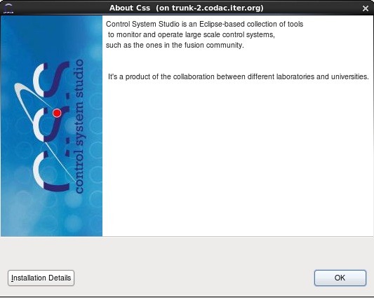
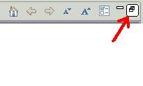
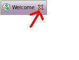
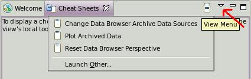

|  |
ITER Control System Studio
|
Various control-system tools combined into a consistent environment.
When you start CSS for the very first time, you will see a "Welcome" screen that includes an "Overview", "What's New", "First Steps" and "Samples". The Overview might have led you to this help screen.
Use the "Restore" button on the window border to make the "Welcome" screen smaller, or close it by pressing the "X" button next to the title.
| The "restore" button: |
 |
| The "close" button: |
 |
If you later want to return to the "Welcome" screen to read more, you can access it via the "Help" menu -> subsection "Welcome".
Use the "Help" menu -> subsection "Help Contents" to open the help pages, and read the CSS Applications related entries, CSS Changelog or CSS Core content. The current page is under CSS ITER topic.
"Help -> Cheat Sheets..." contains step-by-step instructions for selected tasks. Use the 'triangle' in the Cheat Sheets view panel to open the drop-down list of available sheets
| Cheat Sheets: |
 |